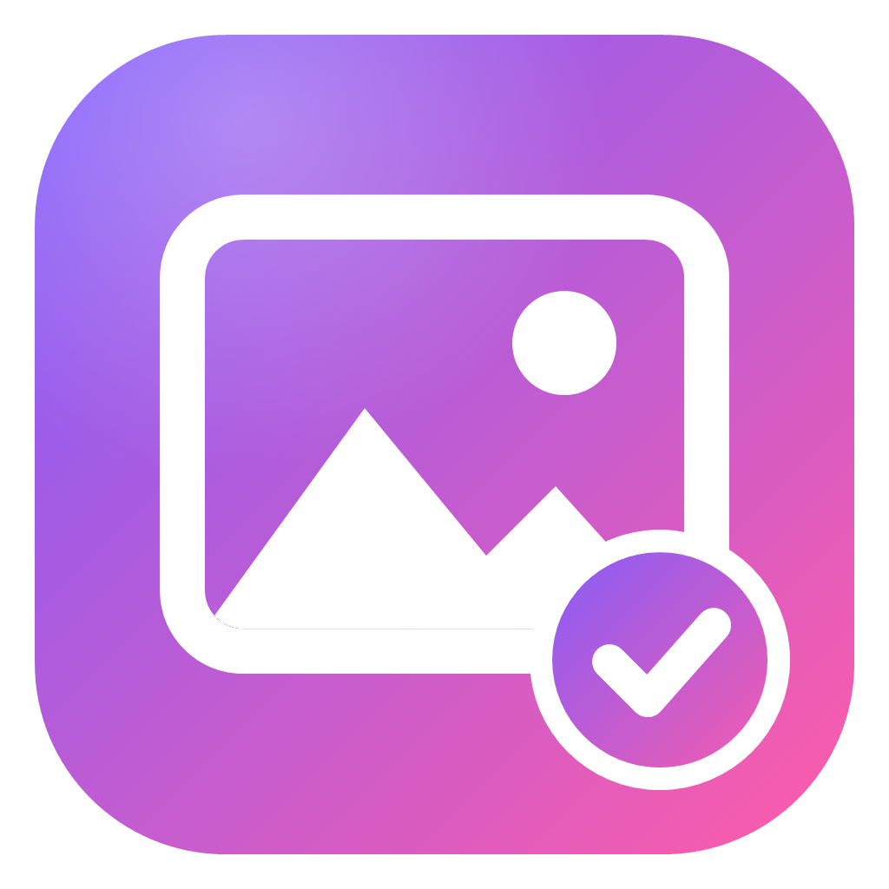

Lumina is a lightning-fast viewer for photos, RAWs and videos. It helps you pick the best shots, recognises faces, hands your photos to Lightroom or DaVinci and lets your clients choose them, even from their phone.

Lumina never changes your originals: it views, selects and creates clean copies for your programs.
JPG, HEIC, PNG, TIFF, WebP and RAWs from Canon, Nikon, Sony, Fujifilm and more, plus MP4, MOV and MKV videos.
Picks, stars, colour labels and notes, with the same shortcuts. Compare up to 4 shots with synchronised zoom.
Splits the shoot into moments, picks photos with sharp faces and open eyes and groups people: give a name («Bride») and keep all their photos. Or choose by hand.
Flags bursts, maybe-blurry photos and duplicates by itself, so you get to the right shots sooner.
Copies the chosen originals, unchanged, and opens Lightroom, Capture One, Photoshop, DaVinci Resolve or Premiere, with stars and notes ready.
Copies photos and videos into tidy folders, with a backup on a second drive and a check of every file.
Full-quality originals, JPGs for web, Instagram and WhatsApp with your logo, printable PDF contact sheets and frames from videos.
The program follows your computer's language, or you choose it. For foreign clients, package, gallery and messages are in English.
You prepare previews with your logo, the client chooses from home (even on their phone) and the choice comes back to Lumina, which selects the right originals by itself.
Not a photographer? Lumina is also a great everyday viewer.
Quick answers to the most common questions.
Yes, it's free, including the account to receive your clients' choices. There are no ads.
Yes: Lumina isn't signed with a certificate yet and Windows warns about new programs. Click «More info» and then «Run anyway».
No. The Lumina account is only for photographers who want to receive their clients' choices automatically, even on several PCs. You don't need it to view and choose photos.
No. Faces are analysed on your computer, offline. The names you give to people stay in Lumina's data folder.
Connect your free Netlify account once (Settings › Online gallery): when you create a web gallery, Lumina puts it online and gives you the link to send by WhatsApp or email. The gallery deletes itself a few days after the client's choice, or when you press «Close gallery». The photos go to your Netlify, not to Lumina's servers.
Settings › About › Language: Automatic (follows your computer), Italiano or English. For a foreign client turn on «Foreign client» in Settings › Client package.
By itself: when a new version comes out Lumina offers it, downloads it and reopens updated. Settings and choices stay as they are.
No. Your photos stay on your PC. With the account, only the names of the chosen files, the notes and the client's name travel. Details are in the privacy policy.
Yes, in Beta: Lumina for Mac (Apple Silicon and Intel, macOS 13 or later) already has the viewer, culling, moments with faces and exports. Client package, account and card import are coming. The first time, macOS warns because the app isn't signed by Apple: right-click the app › Open. The web gallery you send to clients opens on any device.
 Lumina
Lumina